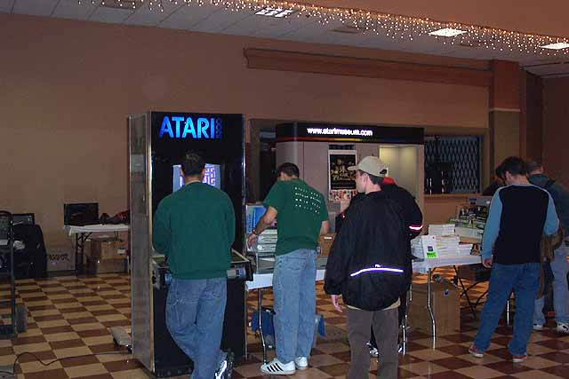
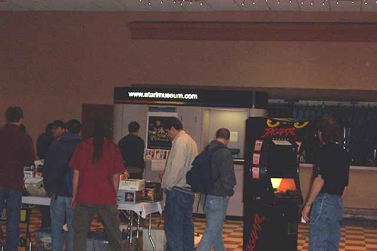
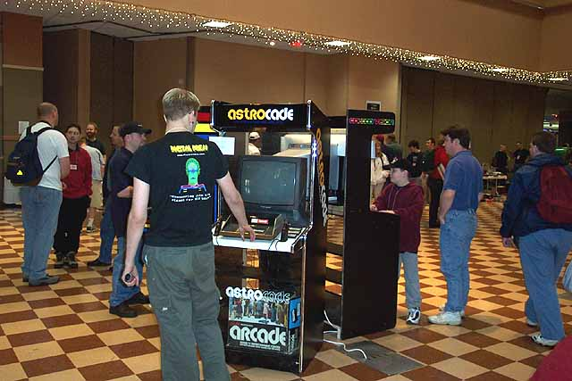
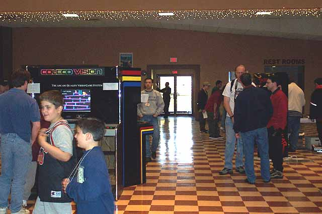

Whoa... its over but the
memories will last forever. The show was absolutely amazing!
What do you get when a couple of devouted Classic Gamers (David, Marc and
Jeff.... plus a dozen or more great volunteers) rent out 15,000 sq ft of
Convention space, put over 3 dozen vendors & exhbitors, 70 coin-ops
and over 1,000 attendee's together with wall to wall video game products,
demo's, giveways and contests??? You get Phillyclassic 3 !!!
Curt Vendel, and David Leonardis with the help of Matt Reichert, Mike Stulir
and David Nelson made sure to add to the show with the Atari Museum exhibit,
sales tables, original Atari store kiosks as well as 3 hand built kiosks
built by Curt Vendel. I wish there were more
photo's but it was tough getting free time to walk around the show so David
and Curt have a small selection of Photo's. Meanwhile check out all of
the coverage of Phillyclassic 3 at Atariage.com,
Digital
Press, Classic Creations
and Adventurevision
which have all posted photo's as well, so check them out. If
you missed this show these pictures are really gonna sting, you missed
out on an unbelievable event!

Original Atari 5200 Kiosk. Castle Blast and Kofi Kopter
were demo'ed on it throughout Saturday.
Other times the prototype Super Pac Man and Pac Man Jr. went put on
for people to play.

Atari Jaguar 64 Kiosk running Battlesphere Gold, in the background
is part of the Atari Museum display

Astrocade Kiosk, one of the many hand built kiosks built by Curt Vendel
for the Phillyclassic show.
To see how they were built, CLICK
HERE

Hand built Colecovision Kiosk built by Curt Vendel for the Phillyclassic
show.... this seemed to be
the big attraction in the kiosk area, it was constantly mobbed with
players from the moment the
power switch was turned on.